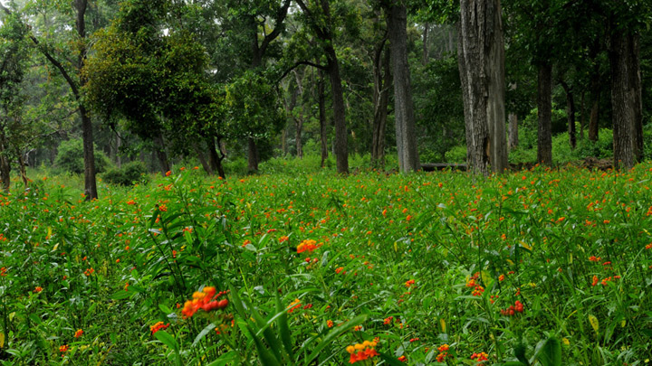
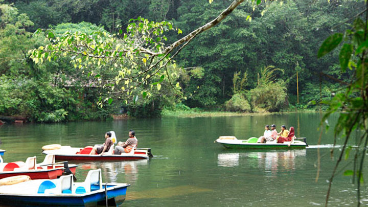

Tholpetty Wildlife Sanctuary

Kanthanpara Waterfalls

Adorning the northern hills of Kerala is the beautiful district of Wayanad, maintained by the District Tourism Promotion Council, Wayanad. This area is famous for its large amount of camping and trekking trails, breathtaking waterfalls, caves, bird watching sites, flora, fauna and an overall plethora of magnificent sights. This area has been a tourist favourite over the years. People are especially delighted by the range of exotic products including spices, coffee, tea, bamboo products, honey and herbal plants available here. Kanthanpara Waterfalls is one hotspot in Wayanad that allures tourist from all over the world. Apart from this magnificent falls, Wayanad calls you to experience the stunning beauty of Karapuzha Dam, Pookode & Karlad Lake as well. If you are an adventure seeker then Cheengari Rock Adventure Center is a must visit place for you. Another must-visit place in Wayanad is the Edakkal Caves. The caves are two natural rock formations believed to have been formed by a large split in a huge rock. The carvings inside are extremely beautiful.
A trip to Edakkal Caves is like a journey into our forgotten past. Located 10 kms from Sulthan Bathery, they have provided historians with great infor
read moreThe hills, rivers and grassland, all come together to enshrine the magnificent Banasura Sagar Dam in Wayanad. One has no option but to....
read more
Rich in bio-diversity, the Wayanad Wildlife Sanctuary is an integral part of the Nilgiri Biosphere Reserve, which has been created with the
read more